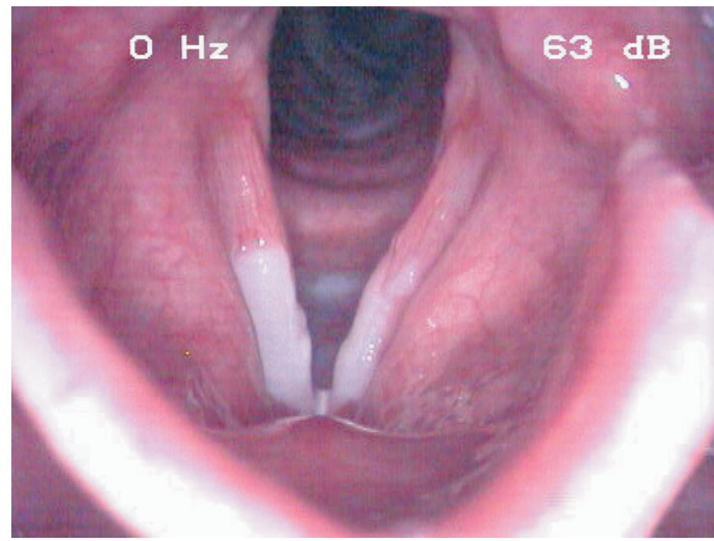
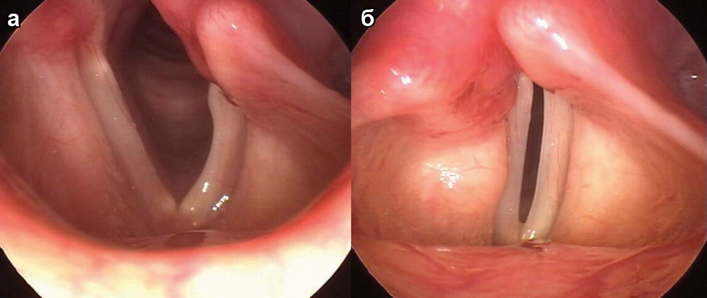

Заболевания гортани
Пересказ по источнику: Бабияк В. И., Накатис Я. А., Говорун М. И. Оториноларингология. Руководство. Т. 2. — СПб.: Питер, 2009. — Часть IV, гл. 20 «Болезни гортани»: острые неспецифические ларингиты — С. 66–77; воспалительные осложнения (абсцесс и флегмона, хондроперихондрит, артрит перстнечерпаловидного сустава) — С. 77–78, 88–96; хронические неспецифические ларингиты — С. 110–118; рубцовые стенозы — С. 173–177; параличи и парезы гортани — С. 191–198.
Острый катаральный ларингит
Острый катаральный ларингит представляет собой острое воспаление слизистой оболочки гортани, вызванное банальной микробиотой. Чаще всего он развивается как проявление острого респираторного заболевания: начавшись с ринофарингита, воспаление нисходит на гортань и трахею. Предрасполагают холодный сезон, курение, алкоголь, профессиональные вредности, голосовое перенапряжение, хронические заболевания носа и глотки с нарушением носового дыхания. Чаще всего возбудителем служит полимикробная ассоциация, активированная гриппозной инфекцией.
Заболевание начинается с сухости, першения и жжения в гортани, боли при фонации. Затем появляются осиплость или афония, лающий кашель с болезненными рвущими позывами; через один-два дня начинает отделяться мокрота, и боль заметно ослабевает. Общее состояние страдает мало, температура тела на фоне острого респираторного заболевания может повышаться до 38 °С. При ларингоскопии в разгар болезни определяются гиперемия всей слизистой оболочки, особенно выраженная в области голосовых складок и грушевидных синусов, отёк, слизисто-гнойный экссудат и несмыкание голосовых складок. Дисфония уменьшается через 5–6 дней, признаки катарального воспаления исчезают к 12–15-му дню.
Воспаление бывает ограниченным. При поражении только надгортанника (epiglottitis acuta) преобладает боль при глотании, так как при глотании надгортанник опускается и прикрывает вход в гортань. Поражение складок преддверия или голосовых складок проявляется расстройством фонации, гиперемия в области межчерпаловидного пространства (laryngitis acuta posterior) сильным кашлем. При разлитом ларингите отёк наиболее выражен в вестибулярных и черпалонадгортанных складках, свободный край голосовых складок утолщается в виде округлых валиков, при стробоскопии выявляются ограничение подвижности и асинхронность колебаний.


Подскладочный ларингит и ложный круп
Подскладочный ларингит (laryngitis subchordalis) считается наиболее тяжёлой формой изолированного поражения гортани. При нём воспаляются и отекают нижняя поверхность голосовых складок и подскладочное пространство, стенки которого образованы рыхлой подслизистой соединительной тканью. Болеют преимущественно дети с экссудативным или лимфатическим диатезом, спазмофилией, рахитом, чаще в холодное время года, нередко на фоне гриппа, ринофарингита, аденоидита, кори.
Форма с периодическими спазмами гортани получила название ложного крупа (pseudocroup). Приступ начинается внезапно, чаще ночью, у ребёнка, который до этого был здоров или имел острое респираторное заболевание. Ребёнок просыпается с нарастающим удушьем, инспираторной одышкой, втяжением яремной и надключичных ямок, цианозом носогубного треугольника, беспокойством. Голос остаётся звучным, кашель сухой, хриплый, лающий; по описанию автора, звонкая речь в сочетании с хриплым кашлем почти патогномонична. Приступ длится от нескольких минут до 2–3 часов, завершается выделением вязкой мокроты и может повториться. Симптом В. Г. Ермолаева: между выдохом и вдохом есть интервал, при истинном крупе его нет. При ларингоскопии под нормальными голосовыми складками видны гиперемированные отёчные валики, во время спазма дыхательная щель не превышает 2 мм.
Дифференциальную диагностику проводят с рефлекторным ларингоспазмом у детей 2–3 лет (более короткий и выраженный, без воспалительных явлений, возможны судороги и признаки спазмофилии) и с дифтерией гортани, при которой стеноз и афония нарастают постепенно, а в гортани видны налёты. Основная опасность состоит в том, чтобы пропустить дифтерию. Самые тяжёлые осложнения: бронхопневмония и ларинготрахеобронхит.
Отёчный и флегмонозный ларингит
Отёчный (подслизистый) ларингит развивается вследствие токсинов, вырабатываемых стрептококками, чаще у ослабленных больных (диабет, уремия, авитаминоз, кахексия) и на фоне гриппа, скарлатины. Отёк возникает в рыхлом подслизистом слое: на язычной поверхности надгортанника, в черпалонадгортанных складках, в области черпаловидных хрящей, в подскладочном пространстве и складках преддверия. У взрослых он чаще локализуется в преддверии гортани, у детей в подскладочном пространстве. Голосовые складки и гортанная поверхность надгортанника не поражаются. Односторонний отёк может имитировать абсцесс.
Состояние больного заметно тяжелее, чем при катаральном ларингите: озноб, температура до 39 °С, ощущение инородного тела, боль при глотании и фонации, сухой приступообразный кашель. Течение молниеносное или растянуто на 2–3 дня. Инспираторная одышка с втяжением надгрудинной, надключичных, эпигастральной областей и межрёберных промежутков указывает на нарастающий стеноз на уровне голосовой щели или подскладочного пространства. При остром отёчном ларингите гипоксия наступает быстро, при хронических стенозах организм успевает адаптироваться. Прямую ларингоскопию следует проводить осторожно из-за риска спазма гортани.
Флегмонозный ларингит отличается резко выраженным воспалением мягких тканей, иногда внутреннего перихондрия, с формированием абсцесса. Абсцесс и флегмона гортани чаще возникают как осложнение паратонзиллярного абсцесса или абсцесса язычной миндалины, после повреждения гортани инородным телом, реже после тяжёлого гриппозного ларингита. Симптомы те же, что при отёке, но выражены сильнее: за несколько часов возможно удушье, температура достигает 39–41 °С с ознобами, боль невыносимая, отдаёт в ухо, височную и затылочную области. Через 1–2 дня на гиперемированной слизистой оболочке появляются желтоватые инфильтраты, чаще в области валекул и на язычной поверхности надгортанника. Регионарные лимфатические узлы увеличены, плотные, болезненные. Частая диагностическая ошибка состоит в том, что начальную фазу принимают за обычный отёчный ларингит. Осложнениями служат хондроперихондрит, шейный целлюлит, медиастинит, абсцесс лёгкого, сепсис; прогноз осторожный.
Хондроперихондрит гортани
Хондроперихондрит представляет собой воспаление надхрящницы и хрящей гортани. Он возникает как осложнение гортанных ангин и подслизистого абсцесса, после травмы с нарушением целости слизистой оболочки и надхрящницы, при изъязвлении слизистой оболочки (сифилис, туберкулёз). Автор различает первичные формы (травматические, вследствие латентной инфекции, метастатические при общих инфекциях) и вторичные (осложнения банальных острых и хронических ларингитов и специфических заболеваний).
Внутренний слой надхрящницы менее устойчив к инфекции, чем наружный. Гной отслаивает надхрящницу от хряща, лишает его питания, и развивается некроз с секвестрацией; поражаются в основном гиалиновые хрящи, не имеющие собственных сосудов. Чаще вовлекается один хрящ: черпаловидный, затем перстневидный, реже щитовидный, крайне редко надгортанник. Различают наружный и внутренний перихондрит в зависимости от локализации поднадхрящничного абсцесса.
Первичные формы протекают остро: температура 39–40 °С, озноб, инспираторная одышка, выраженные воспалительные изменения в крови. Вторичные протекают вяло. При наружной форме умеренная боль при глотании, фонации, кашле и поворотах головы усиливается и иррадиирует в ухо, определяются болезненность при пальпации, флюктуация, синюшное, затем желтоватое пятно кожи, затем гнойный свищ. Внутренняя форма тяжелее: быстро нарастают стридорозное дыхание и гипоксия, голос меняется до неузнаваемости. При ларингоскопии слизистая оболочка гиперемирована, выпячена шаровидным образованием или округлыми инфильтратами, сглаживающими контуры хрящей; иногда виден внутригортанный свищ, чаще в области передней комиссуры. При диффузном процессе видны беловатые хрящевые секвестры с выщербленными краями. Достоверными признаками считают отёк передней поверхности шеи, гнойные свищи и секвестры. Первичный перихондрит практически не отличить от септического отёчного ларингита и флегмоны; дифференцируют также с туберкулёзом, сифилисом, раком, актиномикозом. Исход выздоровления обычно рубцовый стеноз; прогноз для голосовой и дыхательной функций всегда осторожный.
Артрит перстнечерпаловидного сустава
Артрит суставов гортани бывает первичным (ревматоидный, ревматический, подагра) и вторичным, как осложнение перихондрита, флегмоны, после ятрогенной травмы при интубации и эндоскопии. При артрите перстнечерпаловидного сустава наблюдаются дисфония, дисфагия, отёк соответствующей области. Голосовая складка на стороне поражения ограничена в движении или неподвижна и занимает промежуточное (интермедиальное) или околосрединное (парамедиальное) положение. От нейрогенного паралича артрит отличают гиперемия, отёк слизистой оболочки и сглаженность контуров черпаловидного хряща; при анкилозе голосовой отросток перстневидного хряща расположен косо книзу. Двусторонний артрит с парамедиальным положением складок вызывает удушье.
Хронические неспецифические ларингиты
Хронический неспецифический ларингит определён как поверхностное диффузное воспаление слизистой оболочки гортани с длительным течением и периодическими обострениями. Чаще им страдают взрослые мужчины, подверженные бытовым и профессиональным вредностям. В этиологии названы индивидуальная предрасположенность, факторы риска (курение, алкоголь, голосовая нагрузка) и активация условно патогенной флоры. Значение имеют очаги инфекции в верхних дыхательных путях и полости рта, хронический трахеобронхит, нарушение носового дыхания, эндокринные нарушения, аллергия. По преобладающему характеру воспаления различают катаральную, гипертрофическую и атрофическую формы.
Типичные жалобы: осиплость и быстрая утомляемость голоса, першение, сухость, постоянный кашель, более выраженный по утрам у курильщиков и работников вредных производств. Дисфония бывает лёгкой, появляясь к вечеру, или постоянной при органических изменениях голосовых складок.
При катаральном ларингите наблюдается диффузная гиперемия застойного характера, наиболее выраженная в области голосовых складок, слизистая оболочка местами покрыта вязким секретом, сосуды расширены, при сильном кашле возможны мелкоточечные кровоизлияния. При гипертрофическом ларингите голосовые складки утолщены, отёчны, с неровными краями; в межчерпаловидном пространстве видна пахидермия с бугристой серой поверхностью, препятствующая смыканию складок, голос становится грубым и быстро утомляется. Гиперплазия складок преддверия придаёт голосу грубый звук, подскладочная образует валики, дублирующие голосовые складки. К формам гипертрофического ларингита автор относит певческие узелки, контактную язву на уровне голосовых отростков черпаловидных хрящей, пролапс желудочка гортани, который может быть принят за опухоль, ретенционные и ложные кисты, полипозные образования, отёк Рейнке, папиллому с гиперкератозом. Эти формы требуют дифференциации с предраком и карциномой: односторонность изменений и «плюс ткань» говорят против простого воспаления, симметричность свидетельствует в пользу доброкачественного процесса.
Хронический атрофический ларингит встречается реже. Слизистая оболочка сухая, красновато-серая, истончённая, через неё просвечивают извитые сосуды, голосовые складки покрыты плотными жёлтыми или грязно-зелёными корками; при их отторжении остаются мелкие кровоизлияния. Больные постоянно покашливают, голос сиплый и быстро утомляется; в сухих помещениях симптомы усиливаются, во влажных ослабевают. Её дифференцируют с первичной озеной гортани, гипертрофические формы с туберкулёзом, третичным сифилисом, склеромой, папилломатозом, опухолями.
Стенозы гортани
В использованном источнике классификации острых стенозов гортани по стадиям (компенсации, субкомпенсации, декомпенсации, асфиксии) нет. Стадии в источнике приведены только для ларингомаляции (компенсации, субкомпенсации и декомпенсации по А. Ю. Петруничеву); при отёчном ларингите названы лишь признаки нарастающего стеноза (инспираторная одышка с втяжением податливых мест грудной клетки, гипоксия).
Рубцовый стеноз гортани является частым осложнением инфекционных заболеваний гортани (абсцессы, флегмоны, гуммы, туберкулиды, волчанка) и травм. Причины делят на три группы: посттравматические и послеоперационные, хронические язвенно-некротические процессы, острые воспалительные процессы. Самые частые причины: ранения и травмы с повреждением хрящей, перихондриты, ожоги, хирургические вмешательства, длительная интубация (более 24–48 часов), последствия ургентной трахеотомии и коникотомии. Из инфекций названы дифтерия, корь, скарлатина, гуммозный сифилис, туберкулёз, склерома.
Рубцовая ткань формируется на самых узких участках, на уровне голосовых складок и в подскладочном пространстве, особенно у детей. После хондроперихондрита стенозы наиболее выражены. Небольшие рубцы надгортанника и преддверия дают периодическую осиплость, поперхивание, приступообразный кашель; при ограничении подвижности голосовых складок одышка возникает при нагрузке. Чем медленнее развивается стеноз, тем лучше больной адаптируется к кислородной недостаточности. На фоне компенсированного стеноза острый банальный ларингит может вызвать острую обструкцию. При ларингоскопии просвет нередко не виден; фонация нарушена вплоть до шёпотной речи. Прогноз хуже при тотальных тубулярных стенозах и стенозах после обширных хондроперихондритов; у детей он осложняется отставанием развития гортани и речи.
Параличи и парезы гортани
Нервно-мышечная патология гортани делится на миогенные, нейрогенные и психогенные формы. Миопатические парезы редки, двусторонни и затрагивают мышцы, приводящие голосовые складки. Парез голосовых мышц (mm. vocales) даёт овальную щель между складками при фонации, осиплость, слабость голоса и «продувание гортани», так что больной вынужден чаще делать вдох при речи. Паралич боковых перстнечерпаловидных мышц оставляет ромбовидную щель и ведёт к шёпотной речи. Паралич поперечной черпаловидной мышцы оставляет треугольный просвет в задних отделах и меньше всего нарушает функции.
Положение голосовых складок при нейрогенных параличах определяется последовательностью выключения мышц (закон Розенбаха—Семона). Периферические параличи связаны с поражением возвратного нерва: причинами служат аневризма дуги аорты (слева), плевральные спайки верхушки правого лёгкого, опухоли средостения, пищевода и щитовидной железы, зоб, инфекционные и токсические невриты, повреждение при струмэктомии. Первой перестаёт работать задняя перстнечерпаловидная мышца, единственная расширяющая голосовую щель, затем выключаются остальные мышцы, и лишь потом складка занимает трупное положение, промежуточное между полным приведением и крайним отведением. При одностороннем параличе складка сначала неподвижна в срединном положении, здоровая складка примыкает к ней при фонации, голос удовлетворительный, дыхание свободное. Когда процесс переходит на приводящие мышцы, складка отходит от средней линии, на ней появляется вогнутость, она занимает трупное положение, возникает охриплость. Через несколько месяцев развивается компенсаторная гипераддукция здоровой складки, голос звучит обычно, но вокальные упражнения невозможны.
Острый двусторонний паралич возвратных нервов протекает тяжело. Больной сидит, опираясь руками о край кровати, на лице страх, дыхание редкое стридорозное, на вдохе западают надключичные ямки и надчревная область, цианоз губ, частый пульс. Дыхание несколько улучшается не ранее чем через 2–3 дня, когда складки занимают трупное положение и щель между ними не более 3 мм. Центральные параличи обусловлены бульбарными и надъядерными поражениями (множественный склероз, сирингомиелия, кровоизлияния, опухоли продолговатого мозга) и при корковой природе бывают двусторонними. Синдромальные параличи возникают при миастенических синдромах и миотониях. Функциональный паралич проявляется мнимой афонией: голос при смехе, кашле, плаче звучный, а речь возможна только шёпотом. Чаще болеют женщины при истерии, неврастении, стрессе; афония может так же внезапно исчезнуть.

Источники
- Бабияк В. И., Накатис Я. А., Говорун М. И. Оториноларингология. Руководство. Т. 2. — СПб.: Питер, 2009. — Часть IV, гл. 20 «Болезни гортани»: острые неспецифические ларингиты — С. 66–77; воспалительные осложнения (абсцесс и флегмона, хондроперихондрит, артрит перстнечерпаловидного сустава) — С. 77–78, 88–96; хронические неспецифические ларингиты — С. 110–118; рубцовые стенозы — С. 173–177; параличи и парезы гортани — С. 191–198.
Раздел «Учебник» — справочная теория, не клинические рекомендации. Тактика ведения пациента — по разборам КР.